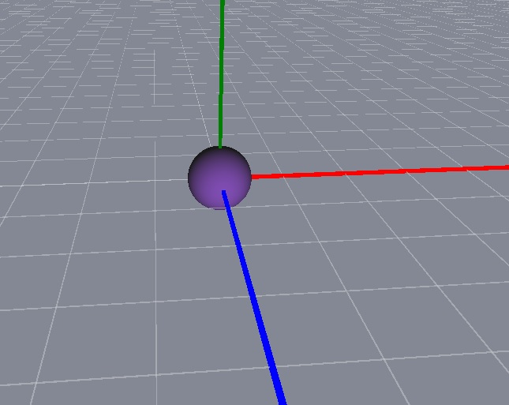

AxisHelper QML Type
Visual helper for showing the 3 axes and a grid in a 3D scene. More...
| Import Statement: | import QtQuick3D.Helpers |
| Inherits: |
Properties
- enableAxisLines : bool
- enableXYGrid : bool
- enableXZGrid : bool
- enableYZGrid : bool
- gridColor : color
- gridOpacity : real
Detailed Description

The X axis is red, the Y axis is green, and the Z axis is blue.
The example scene here has a Sphere at position (0, 0, 0) and an AxisHelper object. With the WasdController helper one can conveniently navigate the scene.
View3D {
anchors.fill: parent
camera: camera
PerspectiveCamera {
id: camera
position: Qt.vector3d(0, 0, 600)
}
DirectionalLight {
position: Qt.vector3d(-500, 500, -100)
color: Qt.rgba(0.4, 0.2, 0.6, 1.0)
ambientColor: Qt.rgba(0.1, 0.1, 0.1, 1.0)
}
Model {
source: "#Sphere"
materials: [ DefaultMaterial { } ]
}
AxisHelper {
}
}
WasdController {
controlledObject: camera
}
Property Documentation
enableAxisLines : bool |
Enables showing the axis lines. The default value is true.
enableXYGrid : bool |
Enables the grid on XY plane. The default value is false.
enableXZGrid : bool |
Enables the grid on XZ plane. The default value is true.
enableYZGrid : bool |
Enables the grid on YZ plane. The default value is false.
gridColor : color |
Specifies the color of the grid. The default value is Qt.rgba(0.8, 0.8, 0.8, 1).
gridOpacity : real |
Specifies the opacity of the grid. The default value is 0.5.